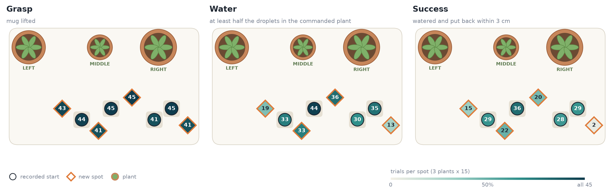

Smart Pouring: Teaching a Robot to Water Plants from 48 Phone Videos of My Hands
Overview
How far can a handful of phone videos take a robot? I filmed myself pouring water from a mug into three plants, 48 times. Those videos became the training data for a Panda arm in a custom LIBERO scene that follows the command “water the left / middle / right plant”.
An episode only counts if the robot does all three steps: grasps the mug, pours at least half of the 10 water droplets into the commanded pot, and puts the mug back within 3 cm of where it started.
From phone video to training data
- Track: a ChArUco board gives the camera pose and an ArUco marker on the mug gives its 6-D pose in every frame.
- Replay: in simulation the robot grasps the mug and its hand follows my tracked pour at a fixed grip. Pours tilt past the arm’s joint limits, so each clip uses the flattest hand tilt that stays within them. 47 of 48 replays succeed.
- Export: the successful replays become a LeRobot dataset (20 fps, two camera views) in SmolVLA-LIBERO format.
What it took
- Grasping: trained on raw replays, the policy memorised the four mug spots and grasped only 27% of the time. Shifting the mug ±3 cm, DART recovery data and 30% state dropout took grasping to 90% at trained spots and 80% at new ones.
- Memory: SmolVLA only sees the present, so once the mug is lifted it forgets where it came from. Adding the hand’s offset from the grasp point to the state (two numbers plus a “holding” flag) lifted put-back from 15% to 63%, beating a learned image memory (31%).
- Recovery: DART pushes over the whole task, then one round of HG-DAgger, where a scripted teacher takes over whenever the policy drifts 1–2 cm from the demo. DAgger was the biggest single gain and doubled success at new spots.
Results
Final model, fine-tuned from the SmolVLA-LIBERO checkpoint, over 360 trials (3 seeds × 120, 90 s each). The untuned checkpoint scores 0%.
- 96% grasp the mug (97% at trained spots, 94% at new ones)
- 68% water the commanded plant
- 50% complete the whole task, including putting the mug back
New mug spots, 7–10 cm from any recorded one, remain the weak point. Next steps are demos across the whole table instead of four fixed spots, and more DAgger rounds.
